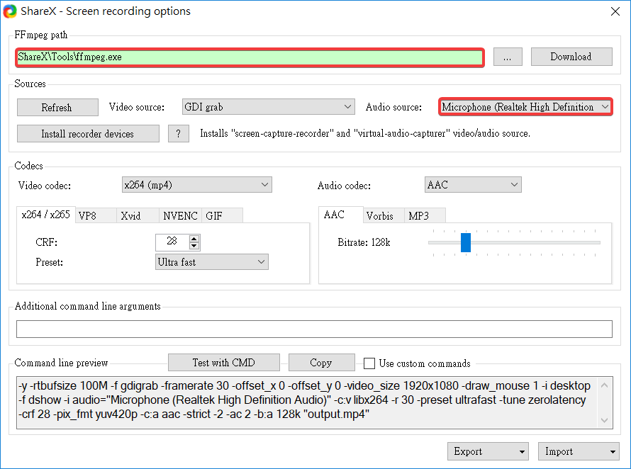

Week2
ShareX 設定路徑及麥克風

ShareX 截圖及錄影的功能

Zoomit 可以利用 Ctrl + 1 以 Zoomit 的功能放大螢幕，選擇畫面,，以畫筆標示重點，也可以結合 ShareX 的 Ctrl + PrintScreen 擷取圖片
領取倉儲 :
1. 先跟老師領取倉儲 mde.tw > i > Week1 > https://classroom.github.com/a/fGqXU9kO > @mdecadp2018 > https://github.com/mdecadp2018/site-40623203
2. 領取完畢後，就可以開始進行維護網誌
3. 將內定 branch 設為 gh-pages
4. 將作業倉儲 git clone 至近端後，在 Week9 前，自行掌握進度，每週拍攝操作實習影片，將教材內容與使用心得放入個人的網站、簡報與網誌中
若要在圖片加上有顏色的框，在 LEO 開啟 cmsimfly.leo > syntaxhighlight 調整框線粗細及顏色
心得 :
這次的課程是教導我們如何使用之前沒用過的 ShareX 其他指令及 Zoomit 放大功能，還有領取個人的倉儲，將自己所學習到的資料在期中前，陸陸續續地放到網誌、網站和部落格，跟大家分享。我希望我可以在有限的時間更新並掌握自己的學習進度，才不會在學期結束後發現什麼都沒學到，儘管發現忘記之前所學的，也能從自己的網誌中找出需要的答案。
Week1 << Previous Next >> Week3